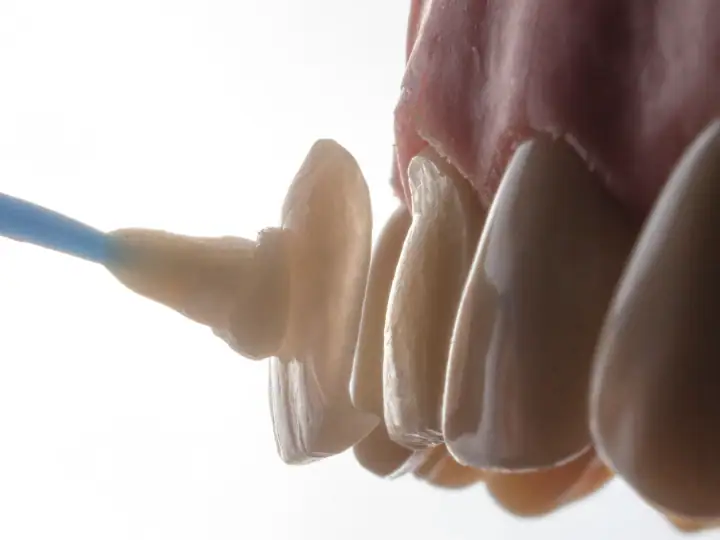
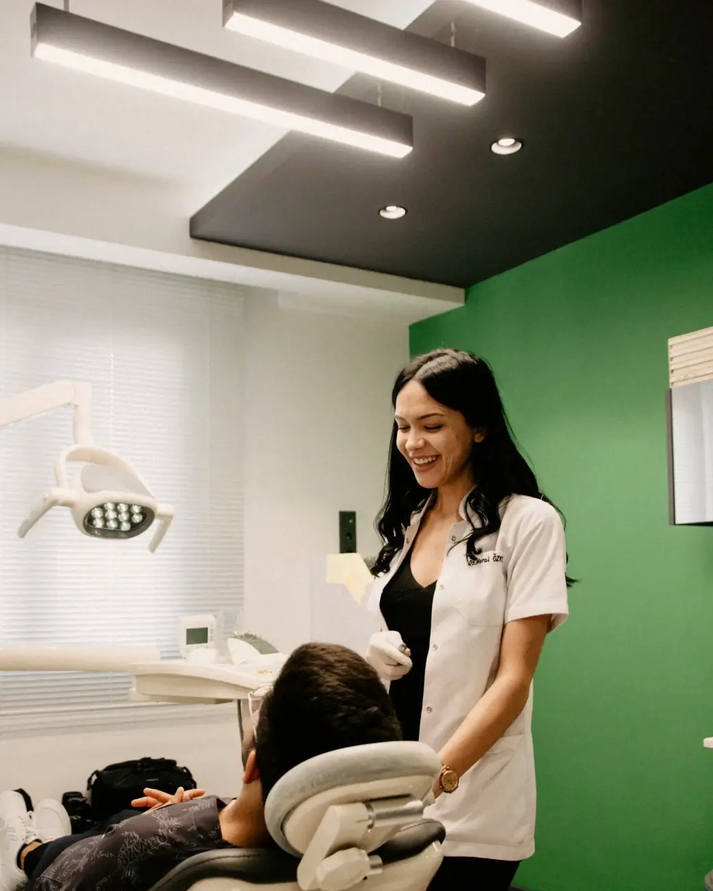
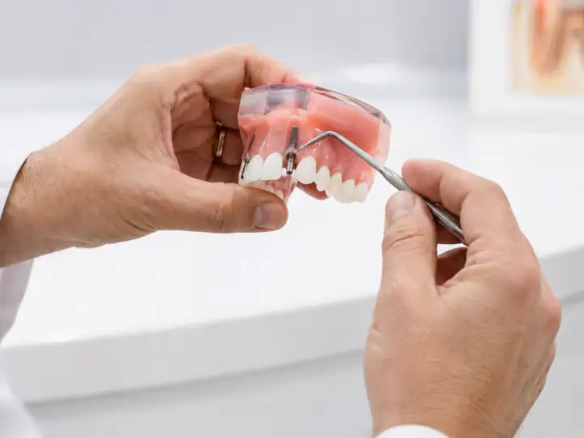
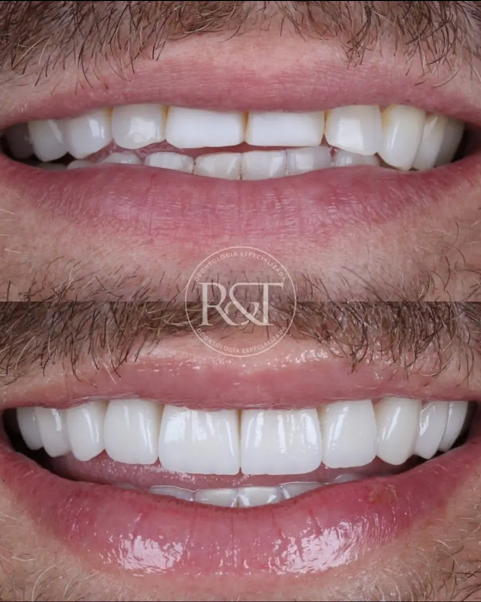

01
Facetas e lentes de contato
Facetas em resina ou porcelana para corrigir cor, forma e tamanho dos dentes com resultado natural.
Agendar avaliaçãoClínica odontológica no Santa Rosa · Uberlândia
Lentes, clínica geral, implantes e clareamento com uma equipe acolhedora que cuida de você desde o primeiro contato. Nota 5,0 com 215 avaliações no Google.

Experiência R&T
Escolha o tratamento e fale direto com a equipe da R&T Odontologia. A mensagem já vai pronta no WhatsApp.

Facetas em resina ou porcelana para corrigir cor, forma e tamanho dos dentes com resultado natural.
Agendar avaliação
Consulta completa, limpeza, restaurações e prevenção. É por aqui que todo tratamento bem-feito começa.
Agendar avaliação
Reposição de dentes perdidos com implantes, devolvendo firmeza para mastigar e segurança para sorrir.
Agendar avaliação
Dentes mais claros com técnica indicada para o seu caso, depois de avaliar a saúde da gengiva e do esmalte.
Agendar avaliação
Próteses fixas e removíveis para recuperar a mastigação, a fala e a confiança no sorriso.
Agendar avaliação
Ortodontia para alinhar os dentes e corrigir a mordida, com manutenção e acompanhamento até o fim.
Agendar avaliação
Na R&T o atendimento começa antes da consulta: a recepção é organizada, a equipe explica cada etapa e quem passou anos sem ir ao dentista se sente à vontade para voltar.
Sem complicação: você conversa, entende o seu caso e só então decide.
Conte o que está sentindo ou o que quer melhorar no sorriso. A equipe responde e encontra o melhor horário para você.
O dentista examina, conversa com você e explica as opções de tratamento, com o plano e as etapas por escrito.
Você decide com calma e é acompanhado em cada sessão, até o resultado final.
Segunda a sexta: 08h–19h · Sábado: 08h–12h
Depoimentos reais de pacientes publicados no Google Maps.
“Minha filha Gizelle ja havia feito procedimentos na clinica e me convidou pra fazer uma avaliação, iniciei meu tratamento com os profissionais muito qualificados e atenciosos. Estou muito satisfeita com o resultado, voltarei pra iniciarmos os implantes também.”
“Fiz um implante na clínica e fiquei bastante satisfeito com resultado, toda a equipe está de parabéns, sempre muito atenciosos e prestativos, quero deixar aqui o meu agradecimento em especial ao Dr. Lucas um excelente profissional, muito competente naquilo que faz.”
“Agradeço a Dra. Mariana, dr. Daniel e dr. Julia. São profissionais acolhedores, muito educados e detalhistas. Me passaram muita confiança e me deixaram a vontade para fazer o tratamento. Estou satisfeita com o resultado. Agradeço também a Letícia por toda a paciência.”
“Minha experiência na clínica foi extremamente positiva. Desde o primeiro contato, percebi o cuidado com o atendimento ao paciente. A recepção é organizada e acolhedora, transmitindo confiança e tranquilidade.”
“A R&T não é só uma simples clínica, é uma experiência desde o momento que você tem o primeiro contato, antes mesmo de comparecer na clínica o atendimento é especializado ali mesmo no WhatsApp.”
Não achou sua dúvida? Pergunte direto para a equipe no WhatsApp.
A R&T Odontologia fica na R. Álvaro Alves Pinto, 150, Santa Rosa, em Uberlândia (MG), CEP 38401-241. Pelo botão "Traçar rota" nesta página você abre o caminho direto no Google Maps.
A clínica atende segunda a sexta, das 08h às 19h; sábado, das 08h às 12h. Aos domingos fica fechada. O agendamento é feito pelo WhatsApp.
É só chamar no WhatsApp (34) 99978-9008 pelo botão "Agendar avaliação". A equipe responde, tira suas dúvidas e marca o melhor horário para a sua avaliação.
Facetas e lentes de contato, Avaliação e clínico geral, Implantes dentários, Clareamento dental, Próteses dentárias e aparelho ortodôntico. O tratamento indicado para você é definido na avaliação.
As duas cobrem a frente do dente para melhorar cor e formato. A lente de contato é uma faceta bem fina, normalmente de porcelana, que exige pouco ou nenhum desgaste. A faceta de resina é feita direto no consultório. Na avaliação o dentista indica a melhor opção.
Para a maioria das pessoas, a cada seis meses, para limpeza e revisão. Assim os problemas são encontrados cedo, quando o tratamento é mais simples.
O procedimento é feito com anestesia local, então você não sente dor durante a cirurgia. Nos dias seguintes pode haver um leve incômodo, controlado com as orientações e a medicação indicadas pelo dentista.
Com bons hábitos, o resultado costuma durar de um a três anos. Café, vinho, cigarro e a falta de limpeza regular encurtam esse tempo. O dentista indica a técnica e a manutenção certas para o seu caso.
Agende sua avaliação na R&T Odontologia em poucos minutos pelo WhatsApp.